data_chiro<-read_excel("data_chiro.xlsx")
data_abiot_50_22<-read.csv("abiot_1950_2022.csv", sep = ";")
data_abiot_23_24<-read.csv("abiot_2023_2024.csv", sep = ";")
coord_chiro<-read_excel("COORD_CAPTURE.xlsx")Unveiling the influence of climatic factors on reproductive patterns in neotropical bats through a Bayesian framework
I. Some history about bat studies in French Guiana
French Guiana is a territory belonging to the bio-geographic unit of the Guiana Shield ((hollowell_checklist_2005?)) With an area of 83,846 km², it hosts, like its neighboring territories, remarkable species diversity. Covered by 97% forest habitat mosaic, its extreme species diversity is well-documented. French Guiana represents a global hotspot in terms of bat species richness. The most commonly used method for studying bats in tropical regions is ground-level mist netting, followed by canopy netting and direct roost searche ((macswiney_g_what_2008?)). It is with these methods that the first studies on bat community characterization were conducted ((charles-dominique_pierre_chauves-souris_2001?)). To date, very little work has focused on exploring the reproduction patterns of Neotropical bat communities. Reproductive patterns are closely related to rainfall regimes ((ruiz-ramoni_reproductive_2016?)) frequently occurring twice a year in tropical regions.
II. Formating our datasets
A. Importation of datasets and packages
We load 4 datasets which will later be cleaned, edited and fused :
- data_chiro contains information collected during each capture event of the study : date, location in French Guiana, sex, age and reproductive state of the captured bats.
- data_abiot_50_22 and data_abiot_23_24 describe meteorological data from French Guiana from 1950 to 2024. We retrieved it from data.gouv.
- coord_chiro containing capture locations’ coordinates (degree minute second), closest municipality and locality.
B. Processing of the abiotic dataset
Firstly we concatenate all the abiotic data together
Then we start to clean the abiotic the dataset by deleting all years that precede the first event of capture, the we use the Lubridate R package ((spinu_lubridate_2010?)) to formate the data column as we want and the dplyr R package ((wickham_dplyr_2023?)) to reorganize the data set.
data_abiot<-rbind(data_abiot_50_22, data_abiot_23_24)
data_abiot <- data_abiot %>%
filter(AAAAMMJJ >= 20141028) %>%
mutate(AAAAMMJJ = ymd(AAAAMMJJ)) %>%
mutate(Year = year(AAAAMMJJ)) %>%
mutate(AAAAMMJJ = format(AAAAMMJJ, "%d-%m-%Y")) %>%
select(NUM_POSTE, NOM_USUEL, LAT, LON, AAAAMMJJ, RR, TM, TAMPLI, FFM, Year) %>%
rename(date = AAAAMMJJ, rain_mm = RR, Temperature = TM, ampli_Temp = TAMPLI, wind_ms = FFM, COMMUNE = NOM_USUEL)%>%
mutate(julian_day = yday(date)) Computing moonlight intensity :
- Function that simulates the lunar cycle as a proxy for night-time luminosity
Lune <- function(date){
sortie <- c()
for(i in 1:length(date)){
date_num <- as.numeric(as.Date(date[i],format="%d-%m-%Y"))
sortie[i] <- (0.5*(cos((date_num-21)*((2*pi)/(29.530589)))+1))
}
return(sortie)
}
data_abiot$Lune <-Lune(data_abiot$date)C. Processing of the biotic dataset
- Data_chiro table pre-processing : We only keep the columns of interest, then we only keep the female individuals because the reproduction indices are mainly observable on females. We only keep adult individuals because this is the age class likely to have reproductive indices.
data_chiro <- data_chiro %>%
select(c(Année, Commune, Localité, Date, Espèce, Sexe, Repro, Age)) %>% #select the columns we want
filter(Sexe == "F") %>%
filter(Age == "AD") %>%
filter(is.na(Repro)*1==0)%>%
mutate(Date = ymd(Date)) %>%
mutate(Year = year(Date)) %>%
mutate(Date = format(Date, "%d-%m-%Y"))%>%
mutate(julian_day = yday(Date))%>% #Date =julian_day
rename(LIEU_DIT = Localité, COMMUNE = Commune) #on renommeConverting DMS coordinates to decimal coordinates :
- Function to converting minute/second degree into decimal degrees
convert_dms_to_decimal <- function(dms) {
parts <- str_match(dms, "(\\d+)°(\\d+)'(\\d+\\.?\\d*)''\\s([NSEW])")
degrees <- as.numeric(parts[, 2])
minutes <- as.numeric(parts[, 3])
seconds <- as.numeric(parts[, 4])
direction <- parts[, 5]
decimal <- degrees + minutes / 60 + seconds / 3600
if (direction %in% c("S", "W")) {
decimal <- -decimal
}
return(decimal)
}- We convert the DMS coordinates to decimal coordinates and we merge it with data_chiro by the capture locality
library(stringr)
coord_chiro <- coord_chiro %>%
rowwise() %>%
mutate(
lon_dms = str_extract(COORD, "^[^N]+W"),
lat_dms = str_extract(COORD, "[^W]+N"),
Longitude = convert_dms_to_decimal(lon_dms),
Latitude = convert_dms_to_decimal(lat_dms)
) %>%
ungroup() %>%
select(COMMUNE, LIEU_DIT, Latitude, Longitude)%>%
rename(LAT = Latitude, LON = Longitude)
data_chiro <- data_chiro %>%
inner_join(coord_chiro, by = "LIEU_DIT")
data_chiro <- data_chiro%>%
select(COMMUNE.x,LIEU_DIT,Date,Espèce,Sexe,Repro,Age,Year,julian_day,LAT,LON)%>%
rename(COMMUNE = COMMUNE.x)D. Graphical representation of French Guiana with the incorporation of meteorological stations and capture points
In the graphic we can see in blue the capture points and in green the meteorological stations
limite <- matrix(c(-54.40582467596958,5.123666986130482,0 -54.45958864979806,4.753175826159146,0 -54.43393543693306,4.077331065323269,0 -54.01198973780399,3.581399050490593,0 -54.20921816638264,3.132878544854336,0 -54.21013685965725,2.796587485871633,0 -54.45803260870573,2.441977197957256,0 -54.68709817836254,2.314479358976484,0 -54.15543583603689,2.123868408305178,0 -53.7651653142448,2.30335873628299,0 -53.35415060581271,2.164099707075567,0 -52.94875879245732,2.132858726757194,0 -52.56611638847146,2.518366090728264,0 -52.59199025844659,2.634734023219086,0 -52.39229001432994,2.890167168832993,0 -52.37091318927082,3.144918005801542,0 -52.21064002801557,3.274351081759725,0 -51.9836274889358,3.696015530721377,0 -51.6721839730206,4.031282773145124,0 -51.63663780527241,4.28966735155517,0 -51.9023261931293,4.501855027711033,0 -52.05244725433236,4.818896971774704,0 -52.51627884489513,5.026927311475695,0 -52.703088477061,5.197262336288941,0 -53.15061905132664,5.577522799535109,0 -53.53420039840946,5.573574890423137,0 -53.95403768383684,5.781472322818466,0 -54.40582467596958,5.123666986130482),ncol=2,byrow=T)
plot(limite[,1],limite[,2],type='l')
points(data_abiot$LON,data_abiot$LAT,pch=20,col='green')
points(coord_chiro$LON,coord_chiro$LAT,pch=20,col="blue")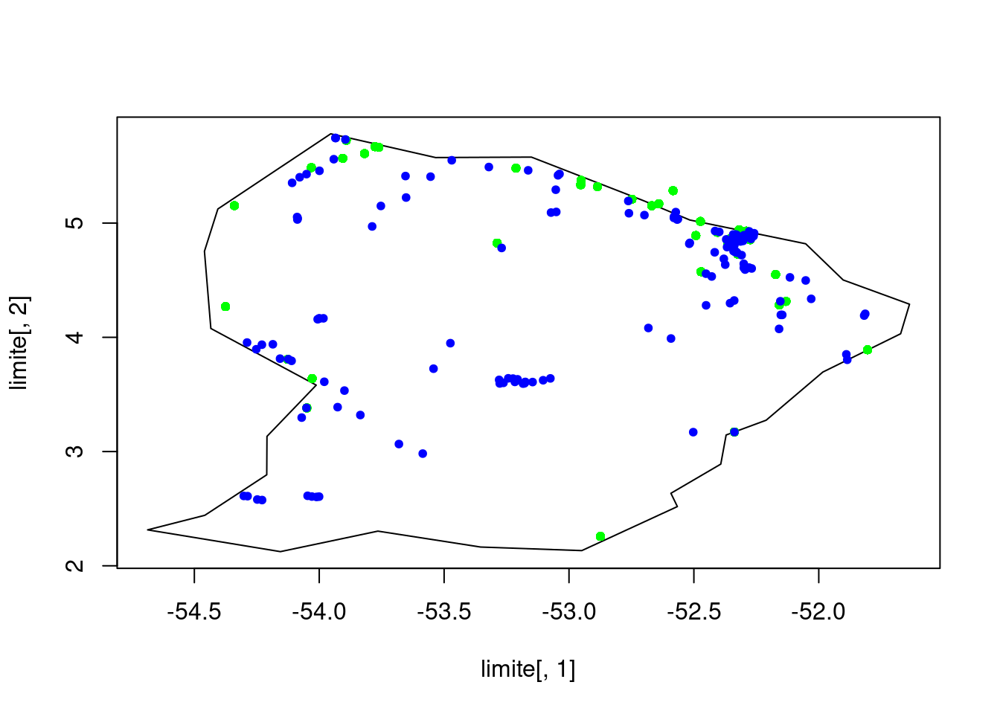
To estimate the meteorogical values at capture sites, we used spatial interpolation. For each date and each value of interest, we measured at first wether or not there was an spatial structure using the moran test. If there is no spatial structure, we estimate the value by meaning the observed values. If there is a spatial structure, we realise a kriging. Because of the necessity to automatise this interpolation, the method is not completely correct, however the weather in French Guiana is not very heterogenous, and is mostly gradients to the ocean or east-west gradient. Morover, the data we obtain show the same patterns of dry season and rain season, and for all the values.
II. Bayesian approach
We will use the Bayesian approach to estimate the effect of those different covariates on the frequency of reproductive individuals…
A. Quick introduction to the Bayesian approach
This theorem is based on conditional probabilities :
\[ P(B \mid A) = \displaystyle{\frac{ P(A \mid B) \; P(B)}{P(A)}} \]
But we might try to explain it more simply as this :
\[ P(\text{hypothesis} \mid \text{data}) = \frac{P(\text{data} \mid \text{hypothesis}) \cdot P(\text{hypothesis})}{P(\text{data})} \]
B. Little exploration of how our response variable react with different covariates
par(mfrow=c(2,2))
ggplot(data_final, aes(Amplitude, repro_positive)) +
geom_point() +
geom_smooth(method = "loess") +
scale_y_continuous(trans='log10')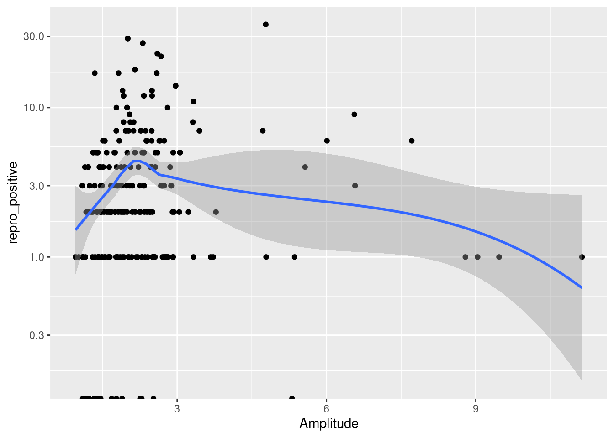
ggplot(data_final, aes(julian_day, repro_positive)) +
geom_point() +
geom_smooth(method = "loess") +
scale_y_continuous(trans='log10')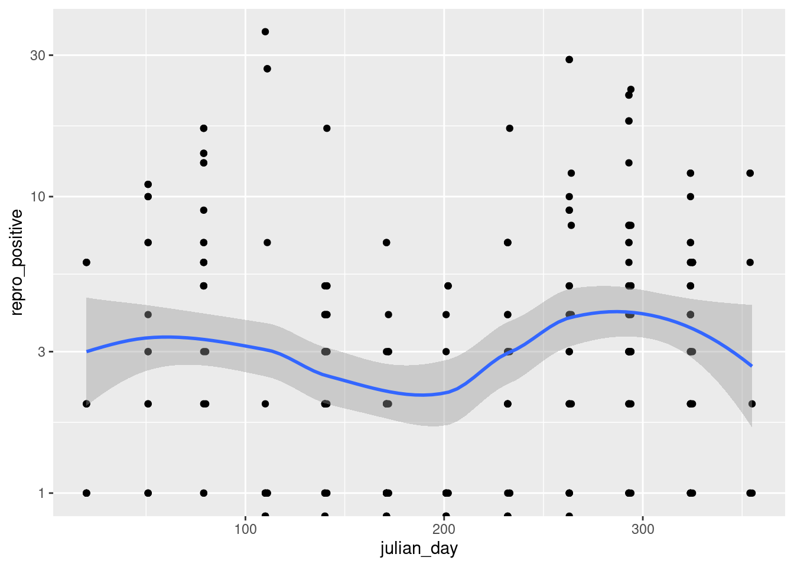
ggplot(data_final, aes(Pluie, repro_positive)) +
geom_point() +
geom_smooth(method = "loess")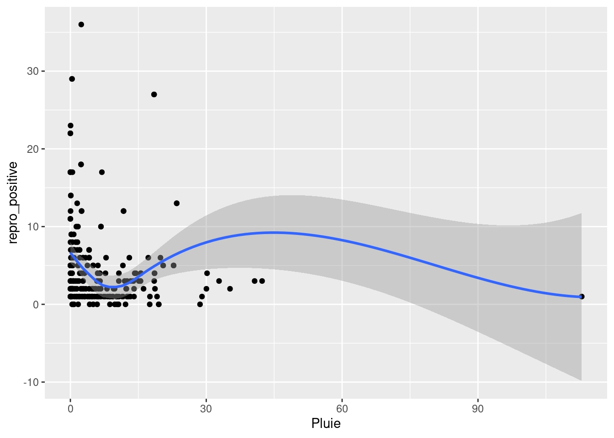
ggplot(data_final, aes(Température, repro_positive)) +
geom_point() +
geom_smooth(method = "loess") +
scale_y_continuous(trans='log10')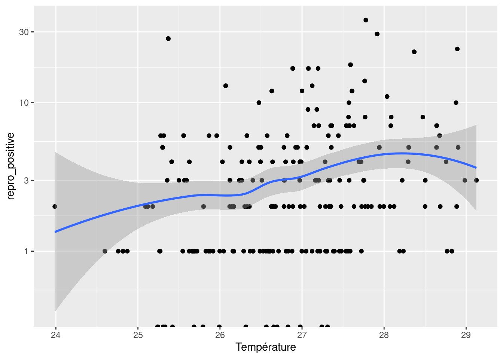
At this point, we might be tempted to see whether or not these climatic parameters influence the proportion of reproductive individuals… let’s try!!
C. Study of climatic influence on the proportion of breeding indidivids
Let’s see the distribution of reproductive individuals :
hist(data_final$repro_positive, breaks = 20)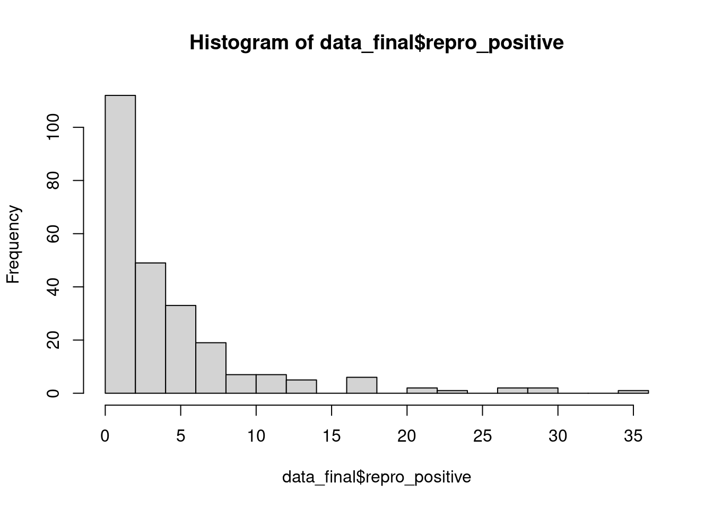
The number of individuals showing reproductive activity seems to follow a negative-binomial distribution, but we encountered some issues to write and fit model using a negative binomial distribution… anyway ! Let’s try to investigate with a binomial !
First, we create an object containing our covariates of interest, we use a common practice which consists of centering-reducing the values of covariates:
datax <- list(
N = nrow(data_final),
repro_positive = data_final$repro_positive,
total_individuals = data_final$total_individuals,
temp = (data_final$Température - mean(data_final$Température)) / sd(data_final$Température),
rain = (data_final$Pluie - mean(data_final$Pluie)) / sd(data_final$Pluie),
julian_day = (data_final$julian_day - mean(data_final$julian_day)) / sd(data_final$julian_day))We write our null model and we assume that the number of reproductive individuals follows a binomial distribution. Specifically, we define our model as follows:
\[\text{repro_positive}[i] \sim \text{Binomial}(p[i], \text{total_individuals}[i])\]
In this model, \(\text{repro_positive}[i]\) represents the number of reproductive individuals observed for each observation ( i ), while \(\text{total_individuals}[i]\) is the total number of individuals in the corresponding group. The parameter \(p[i]\) is the probability of an individual being reproductive, modeled using the logit link function, where ( a ) is a parameter drawn from a normal distribution with mean 0 and a large variance (0.001), reflecting our prior belief about its value.
\[\text{logit}(p[i]) = a\]
Here is the null model in Jags language:
model_null <-
paste("
model {
for (i in 1:N) {
repro_positive[i] ~ dbin(p[i], total_individuals[i])
logit(p[i]) <- a
}
a ~ dnorm(0, 0.001)
}
")Then we set the initial values for the Monte-Carlo Markov Chains, we choose to set two chains to assess initial at different values to see if both converge to same distribution.
init1 <- list (a = -0.5)
init2 <- list (a = 0.5)
inits <- list(init1,init2)We specify the parameter we want to estimate :
parameters <- c("a")The run the model with the function jags() :
chiro_model_null <- jags(data = datax,
inits = inits,
parameters.to.save = parameters,
model.file = textConnection(model_null),
n.chains = 2,
n.iter = 5000,
n.burnin = 1000) Compiling model graph
Resolving undeclared variables
Allocating nodes
Graph information:
Observed stochastic nodes: 246
Unobserved stochastic nodes: 1
Total graph size: 497
Initializing modelAfter fitting the model, we can explore how it went through some useful tools :
- traceplot() allows to see how MCMC converge
traceplot(chiro_model_null, mfrow = c(1,1), varnames = c("a"), ask = F)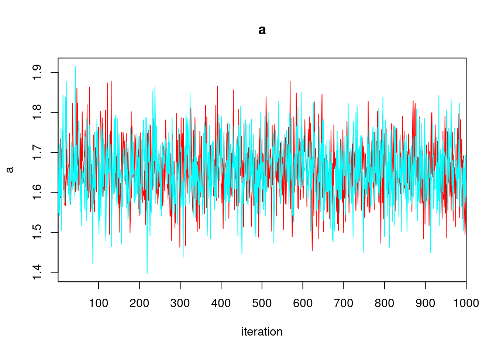
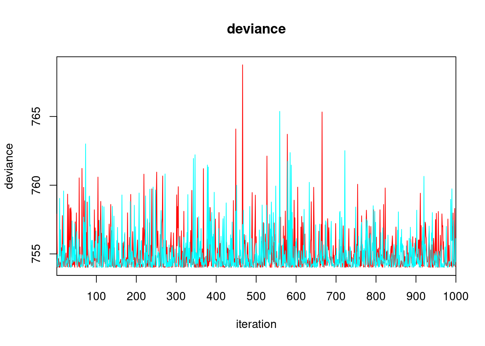
autocorr.plot(as.mcmc(chiro_model_null), ask = F)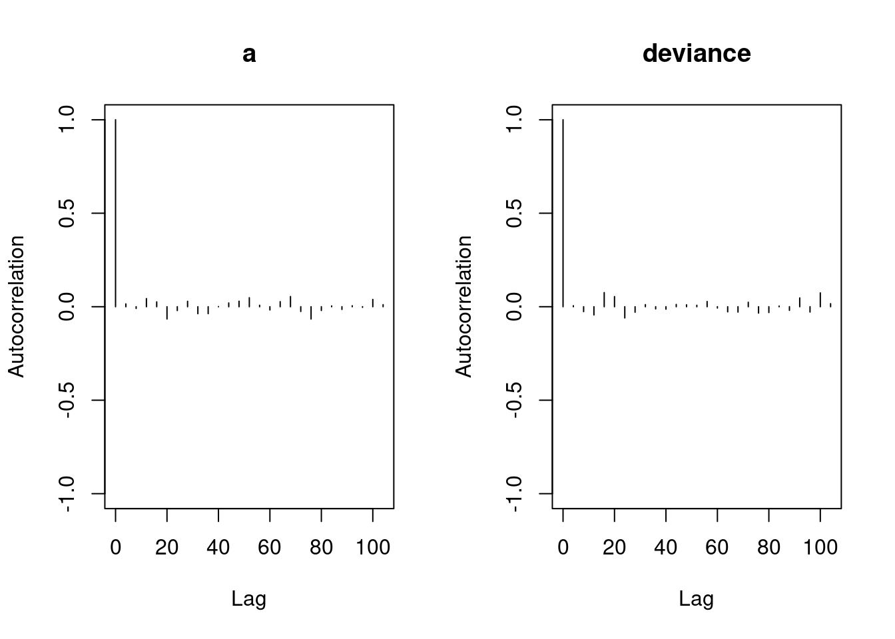
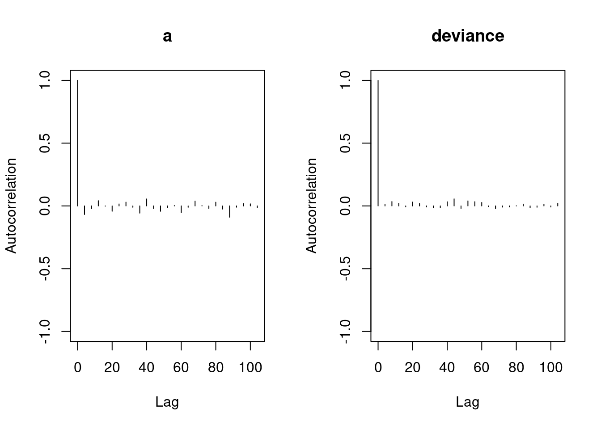
We can also print the object that contain the model to check other features like the estimate of the parameter, the deviance, credible intervals or the number of values used to assess the posterior distribution (n.eff)
print(chiro_model_null)Inference for Bugs model at "4", fit using jags,
2 chains, each with 5000 iterations (first 1000 discarded), n.thin = 4
n.sims = 2000 iterations saved
mu.vect sd.vect 2.5% 25% 50% 75% 97.5% Rhat n.eff
a 1.655 0.074 1.509 1.602 1.655 1.704 1.800 1.001 2000
deviance 755.047 1.393 754.026 754.130 754.503 755.381 758.902 1.001 2000
For each parameter, n.eff is a crude measure of effective sample size,
and Rhat is the potential scale reduction factor (at convergence, Rhat=1).
DIC info (using the rule, pD = var(deviance)/2)
pD = 1.0 and DIC = 756.0
DIC is an estimate of expected predictive error (lower deviance is better).Now, we put the estimated values of the two MCMC chains in the same object :
res<-as.mcmc(chiro_model_null)
res<-rbind(res[[1]], res[[2]])Then we can compute the mean of the estimated values of the intercept that are < 0 :
mean(res[,'a']<0)[1] 0And we can plot the estimated posterior distribution of our parameter ‘a’ :
par(mfrow=c(1,1))
plot(density(res[,'a']),xlab="",ylab="", main="intercept",lwd=3,xlim=c(-0.1,2))
abline(v=0,col='red',lwd=2)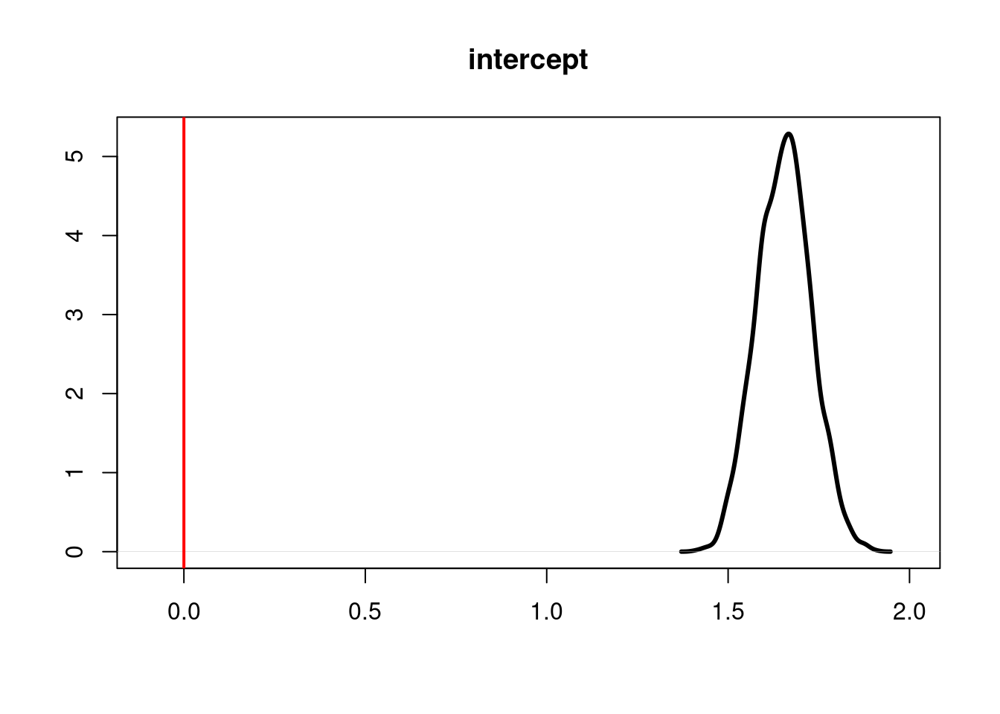
Remember that we defined a non-informative prior on parameter ‘a’ : a ~ dnorm(0, 0.001) to see if test the effect of ‘a’ on \(p[i]\)
You can compute the Watanabe-Akaike Information Criterion :
samples_waic_null<-jags.samples(chiro_model_null$model, c("WAIC", "deviance"), type = "mean",
n.iter = 10000,
n.burnin = 1000,
n.thin = 1)
samples_waic_null$p_waic<-samples_waic_null$WAIC
samples_waic_null$waic<-samples_waic_null$deviance + samples_waic_null$p_waic
tmp<-sapply(samples_waic_null, sum)
waic_null<-round(c(waic = tmp[["waic"]], p_waic = tmp[["p_waic"]]),1)
waic_null waic p_waic
758.2 3.2 We write and fit several models with different parameters (rain, temperature, julian day and thermal amplitude) and we compute the WAIC for each of them:
Here the table of the different models we fitted :
waic_table<-read.table("waic_model.txt", header = T)
waic_table model waic p_waic
1 model_rain_temp_jday 523.3 18.4
2 model_rain_temp_jday_thermamp 528.2 22.6
3 model_jday 533.9 11.9
4 model_rain_jday 541.1 17.6
5 model_rain_temp 594.0 10.8
6 model_null 616.3 3.2
7 model_rain 619.9 5.7D. The best model
So our best model is the one with rain/temperature/julian_day covariates, there it is :
model_rain_temp_jday <-
paste("
model {
for (i in 1:N) {
repro_positive[i] ~ dbin(p[i], total_individuals[i]) # Distribution binomiale
logit(p[i]) <- a + b.rain * rain[i]
+ b.rain2 * pow(rain[i],2)
+ b.temp * temp[i]
+ b.julian_day * julian_day[i]
+ b.julian_day2 * pow(julian_day[i], 2)
+ b.julian_day3 * pow(julian_day[i], 3)
+ b.julian_day4 * pow(julian_day[i], 4)
}
a ~ dnorm(0, 0.001) # Prior sur l'intercept
b.rain ~ dnorm(0, 0.001)
b.rain2 ~ dnorm(0, 0.001)
b.temp ~ dnorm(0, 0.001)
b.julian_day ~ dnorm(0, 0.001)
b.julian_day2 ~ dnorm(0, 0.001)
b.julian_day3 ~ dnorm(0, 0.001)
b.julian_day4 ~ dnorm(0, 0.001)
}
")We decide to assess polynomial effect on \(rain^2\) and on \(julian\_day^4\) because of the non-linearity effect on \(repro\_positive\)
And as we made before, we set the initial values for both MCMC, we specify the parameters to be estimated :
init1 <- list (a = -0.5,
b.rain = -0.5,
b.rain2 = -0.5,
b.temp = -0.5,
b.julian_day = -0.5,
b.julian_day2= -0.5,
b.julian_day3= -0.5,
b.julian_day4 = -0.5)
init2 <- list (a = 0.5,
b.rain = 0.5,
b.rain2 = 0.5,
b.temp = 0.5,
b.julian_day = 0.5,
b.julian_day2= 0.5,
b.julian_day3= 0.5,
b.julian_day4 = 0.5)
inits <- list(init1,init2)
parameters <- c("a",
"b.rain",
"b.rain2",
"b.temp",
"b.julian_day" ,
"b.julian_day2",
"b.julian_day3",
"b.julian_day4")And we run jags() :
chiro_rain_temp_jday <- jags(data = datax,
inits = inits,
parameters.to.save = parameters,
model.file = textConnection(model_rain_temp_jday),
n.chains = 2,
n.iter = 10000,
n.burnin = 1000)Compiling model graph
Resolving undeclared variables
Allocating nodes
Graph information:
Observed stochastic nodes: 246
Unobserved stochastic nodes: 8
Total graph size: 2709
Initializing modelchiro_rain_temp_jdayInference for Bugs model at "5", fit using jags,
2 chains, each with 10000 iterations (first 1000 discarded), n.thin = 9
n.sims = 2000 iterations saved
mu.vect sd.vect 2.5% 25% 50% 75% 97.5% Rhat
a 0.414 0.152 0.131 0.309 0.411 0.519 0.715 1.002
b.julian_day 0.149 0.252 -0.352 -0.022 0.150 0.315 0.658 1.001
b.julian_day2 2.325 0.330 1.704 2.100 2.316 2.550 2.955 1.001
b.julian_day3 -0.212 0.154 -0.509 -0.314 -0.215 -0.113 0.096 1.001
b.julian_day4 -0.574 0.133 -0.824 -0.662 -0.575 -0.487 -0.318 1.001
b.rain 0.428 0.221 -0.022 0.281 0.434 0.576 0.852 1.001
b.rain2 0.063 0.102 -0.071 -0.013 0.043 0.121 0.312 1.001
b.temp 0.561 0.128 0.305 0.474 0.562 0.651 0.807 1.019
deviance 616.898 7.544 610.980 613.666 615.998 619.214 626.155 1.123
n.eff
a 2000
b.julian_day 2000
b.julian_day2 2000
b.julian_day3 2000
b.julian_day4 2000
b.rain 2000
b.rain2 2000
b.temp 620
deviance 2000
For each parameter, n.eff is a crude measure of effective sample size,
and Rhat is the potential scale reduction factor (at convergence, Rhat=1).
DIC info (using the rule, pD = var(deviance)/2)
pD = 28.5 and DIC = 645.4
DIC is an estimate of expected predictive error (lower deviance is better).As we made before, we check how the MCMC converged and we trace the autocorrelation plot :
traceplot(chiro_rain_temp_jday, mfrow = c(2,4), varnames = c("a","b.rain", "b.rain2","b.temp","b.julian_day" ,"b.julian_day2","b.julian_day3","b.julian_day4"), ask = F)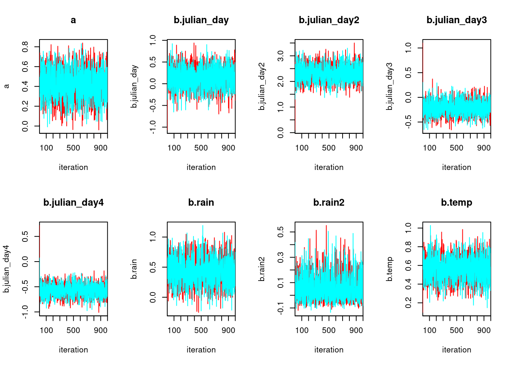
autocorr.plot(as.mcmc(chiro_rain_temp_jday), ask = F)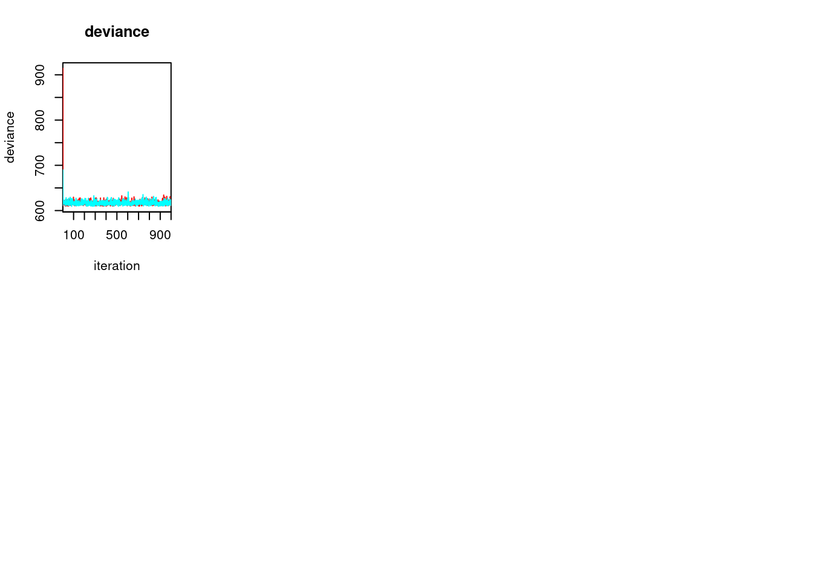
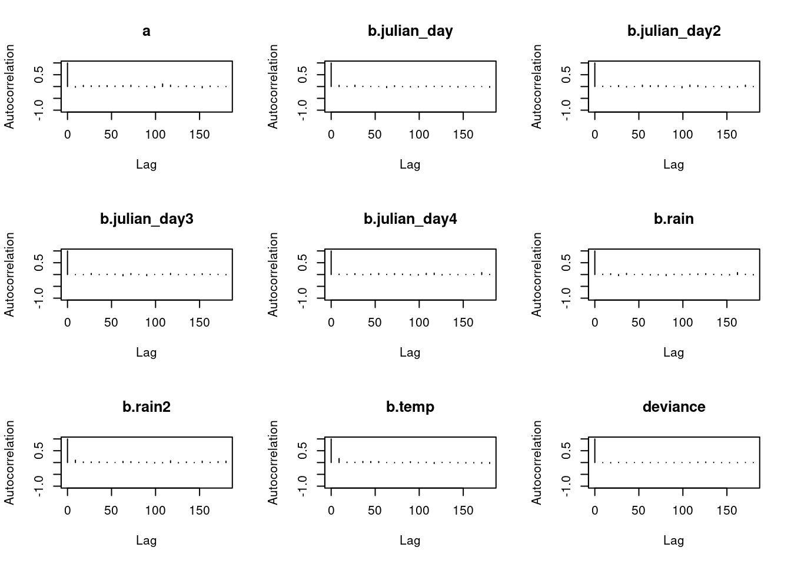
We put the estimate values in the same object :
res<-as.mcmc(chiro_rain_temp_jday)
res<-rbind(res[[1]], res[[2]])And we plot the estimated distribution of every parameters :
par(mfrow=c(2,4))
plot(density(res[,'a']),xlab="",ylab="", main="Intercept",lwd=3,xlim=c(-0.1,2))
abline(v=0,col='red',lwd=2)
plot(density(res[,'b.rain']),xlab="",ylab="", main="Rainfall",lwd=3)
abline(v=0,col='red',lwd=2)
plot(density(res[,'b.rain2']),xlab="",ylab="", main="Rainfall",lwd=3)
abline(v=0,col='red',lwd=2)
plot(density(res[,'b.temp']),xlab="",ylab="", main="Temperature",lwd=3, xlim=c(-0.1,1.5))
abline(v=0,col='red',lwd=2)
plot(density(res[,'b.julian_day']),xlab="",ylab="", main="julian_day",lwd=3)
abline(v=0,col='red',lwd=2)
plot(density(res[,'b.julian_day2']),xlab="",ylab="", main="julian_day2",lwd=3, xlim = c(0,4))
abline(v=0,col='red',lwd=2)
plot(density(res[,'b.julian_day3']),xlab="",ylab="", main="julian_day3",lwd=3)
abline(v=0,col='red',lwd=2)
plot(density(res[,'b.julian_day4']),xlab="",ylab="", main="julian_day4",lwd=3)
abline(v=0,col='red',lwd=2)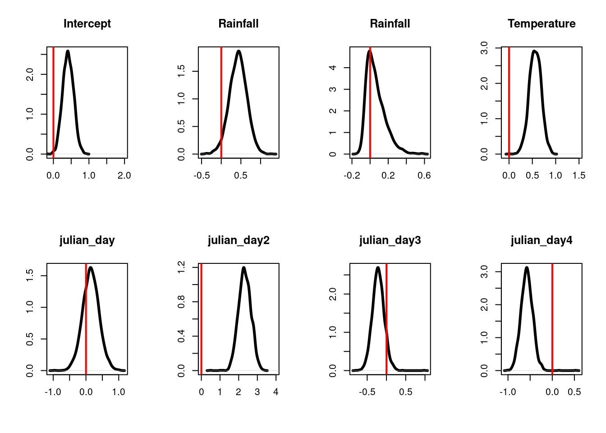
E. Using our model
Now let’s try to predict some values from our model to better understand the different relations between \(repro\_positive\) and the different covariates.
First, let’s simulate some data !
pred_data <- expand.grid(
rain = seq(min(datax$rain), max(datax$rain), length.out = 1000),
temp = median(datax$temp),
julian_day = median(datax$julian_day))This grid will allow us to simulate data from the source data.frame “data_final”, for some reasons that we don’t clearly understand… we need to sample each covariate at once and fix the other one to the median.
Then we compute \(p[i]\) for each estimate value from the model : \[ \text{logit}(p_i) = a + b_{\text{rain}} \cdot \text{rain}_i + b_{\text{rain2}} \cdot \text{rain}_i^2 + b_{\text{temp}} \cdot \text{temp}_i + b_{\text{julian_day}} \cdot \text{julian_day}_i + b_{\text{julian_day2}} \cdot \text{julian_day}_i^2 + b_{\text{julian_day3}} \cdot \text{julian_day}_i^3 + b_{\text{julian_day4}} \cdot \text{julian_day}_i^4 \]
n_sim<-1000
p_sim <- matrix(NA, nrow = n_sim, ncol = nrow(pred_data))
for (i in 1:n_sim) {
sample_idx <- sample(1:nrow(res), 1)
a <- res[sample_idx, "a"]
b.rain <- res[sample_idx, "b.rain"]
b.rain2 <- res[sample_idx, "b.rain2"]
b.temp <- res[sample_idx, "b.temp"]
b.julian_day <- res[sample_idx, "b.julian_day"]
b.julian_day2 <- res[sample_idx, "b.julian_day2"]
b.julian_day3 <- res[sample_idx, "b.julian_day3"]
b.julian_day4 <- res[sample_idx, "b.julian_day4"]
p_sim[i, ] <- plogis(
a +
b.rain * pred_data$rain + b.rain2 * pred_data$rain^2 +
b.temp * pred_data$temp +
b.julian_day * pred_data$julian_day +
b.julian_day2 * pred_data$julian_day^2 +
b.julian_day3 * pred_data$julian_day^3 +
b.julian_day4 * pred_data$julian_day^4
)
}Then we compute our credible intervals :
pred_data <- pred_data %>%
mutate(
mean_p = apply(p_sim, 2, mean),
lower = apply(p_sim, 2, quantile, probs = 0.025),
upper = apply(p_sim, 2, quantile, probs = 0.975)
)We want to get back to the natural scale for the X-axis :
mean(data_final$Pluie)[1] 6.95171sd(data_final$Pluie)[1] 10.36198pred_data$rain <- (pred_data$rain * 10.71609) + 7.087872Then we can plot our response variable with a covariate ! here the rain :
ggplot(pred_data, aes(x = rain)) +
geom_line(aes(y = mean_p), color = "blue") +
geom_ribbon(aes(ymin = lower, ymax = upper), alpha = 0.2) +
labs(x = "Rain (Natural Scale)", y = "Probability of Reproduction") +
theme_minimal() +
theme(axis.text.x = element_text(angle = 45, hjust = 1))+
scale_y_continuous(limits = c(0, 1))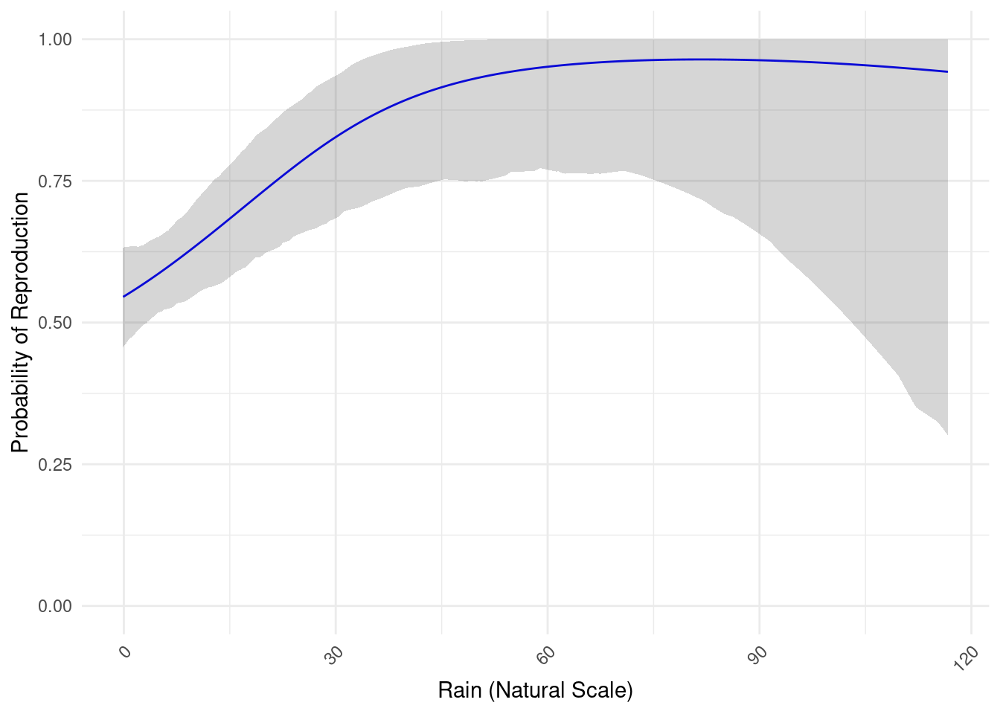
Same task for julian_day… yes it’s a bit boring, we need to improve the code !
pred_data <- expand.grid(
rain = median(datax$temp),
temp = median(datax$temp),
julian_day = seq(min(datax$julian_day), max(datax$julian_day), length.out = 1000))
p_sim <- matrix(NA, nrow = n_sim, ncol = nrow(pred_data))
for (i in 1:n_sim) {
sample_idx <- sample(1:nrow(res), 1)
a <- res[sample_idx, "a"]
b.rain <- res[sample_idx, "b.rain"]
b.rain2 <- res[sample_idx, "b.rain2"]
b.temp <- res[sample_idx, "b.temp"]
b.julian_day <- res[sample_idx, "b.julian_day"]
b.julian_day2 <- res[sample_idx, "b.julian_day2"]
b.julian_day3 <- res[sample_idx, "b.julian_day3"]
b.julian_day4 <- res[sample_idx, "b.julian_day4"]
p_sim[i, ] <- plogis(
a +
b.rain * pred_data$rain + b.rain2 * pred_data$rain^2 +
b.temp * pred_data$temp +
b.julian_day * pred_data$julian_day +
b.julian_day2 * pred_data$julian_day^2 +
b.julian_day3 * pred_data$julian_day^3 +
b.julian_day4 * pred_data$julian_day^4
)
}
pred_data <- pred_data %>%
mutate(
mean_p = apply(p_sim, 2, mean),
lower = apply(p_sim, 2, quantile, probs = 0.025),
upper = apply(p_sim, 2, quantile, probs = 0.975)
)
mean(data_final$julian_day)[1] 201.5163sd(data_final$julian_day)[1] 96.75666pred_data$julian_day <- (pred_data$julian_day * 95.50893) + 203.0329
ggplot(pred_data, aes(x = julian_day)) +
geom_line(aes(y = mean_p), color = "blue") +
geom_ribbon(aes(ymin = lower, ymax = upper), alpha = 0.2) +
labs(x = "Julian day (Natural Scale)", y = "Probability of Reproduction") +
theme_minimal() +
theme(axis.text.x = element_text(angle = 45, hjust = 1))+
scale_y_continuous(limits = c(0, 1))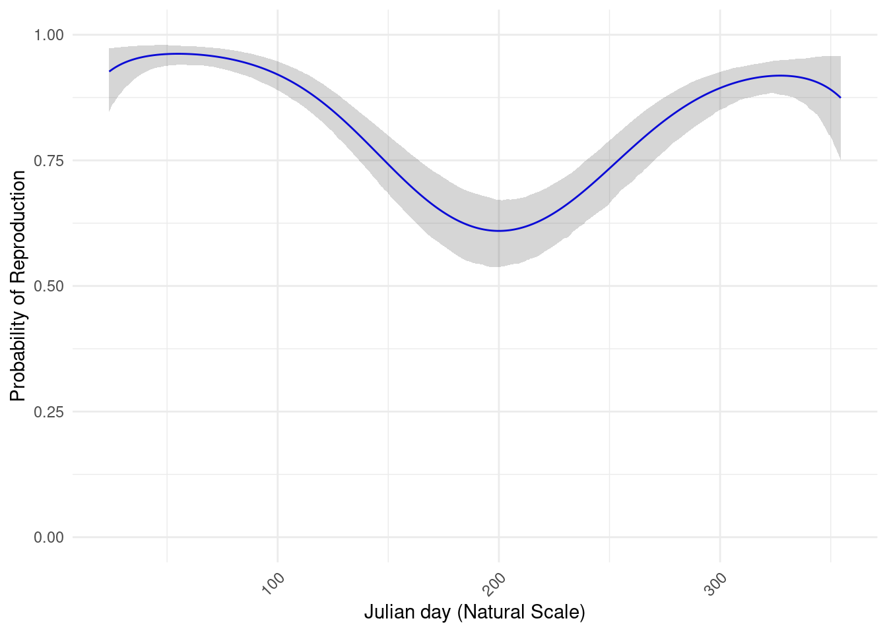
Results: Those results suggest that the probability of being reproductive could be mainly influenced by the two rainy seasons that occurs in the lowlands of French Guiana and, therefore, with the fructification period of many plants. As the extreme majority of the species caugth with mist-nets are frugivorous.
(We would greatly appreciate advice on how to improve this analysis!)